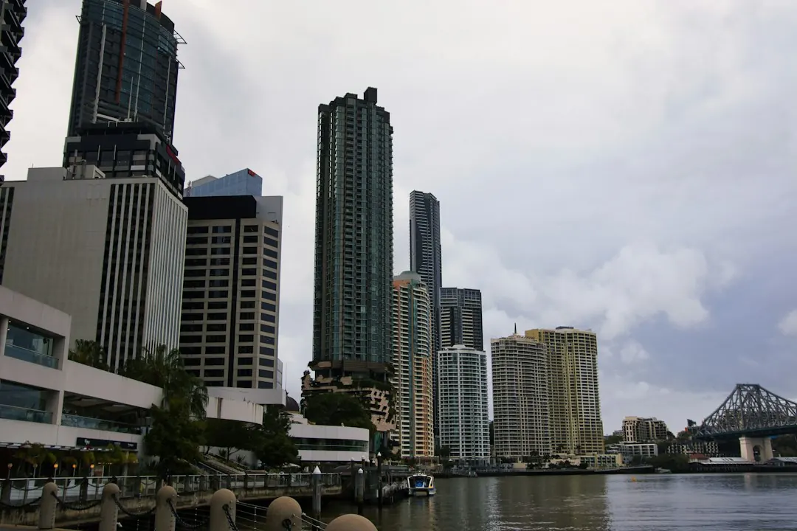

Retaining wall work in Brisbane should begin with wall height, retained soil, access, nearby structures and drainage signs. Building approval may not be required only when every listed condition fits: the wall plus retained fill or cut are no more than 1 metre, there is no surcharge loading, the wall is at least 1.5 metres from a building or another retaining wall, and it is not part of a pool fence. If one condition fails, ask about the certifier or engineer pathway.
For homeowners comparing retaining wall repairs brisbane options, the practical starting point is to document movement, water flow, access and nearby loads before requesting a repair or replacement assessment.
Retaining Wall Repairs Brisbane Explained
The published guidance from Brisbane Retaining Walls asks homeowners to describe the suburb, wall height, material, access and drainage signs before a contractor reviews the likely repair, replacement or quote pathway. A leaning sleeper wall, bowed blockwork and washed-out backfill can require different investigations.
Record what is visible from both sides. Note whether the wall is leaning or bulging, whether soil is wet, whether weep holes appear blocked, and whether water is washing out the backfill. Include nearby driveways, buildings, pools, fences, sheds, other walls and places where vehicles or structures load the retained ground.
Do not remove a damaged base sleeper simply because one board looks rotten. The base may be holding retained soil, while failed posts or drainage may also contribute to movement. The surrounding bays, supports and removal sequence should be assessed first.
Choose repair, replacement or a new wall
A limited timber repair may suit a wall where deterioration is local and the remaining supports are sound. Widespread rot, failed posts or persistently wet backfill can point towards replacement. For a bowing wall, replacing one board without checking the posts, retained ground and drainage may leave the underlying problem unresolved.
Material selection should follow the site rather than appearance alone:
- Concrete sleepers with steel posts suit planned drainage and tidy lines where long service life is sought.
- H4 treated timber sleepers can suit low-height garden edges and cost-sensitive replacements.
- Core-filled besser blocks may suit rendered finishes, tight boundaries and structural walls requiring careful certification.
- Rock, boulder and gabion systems can suit sloping sites or free-draining terraces, subject to batter, stone selection and drainage planning.
For more repair-focused questions and site descriptions, see the Brisbane retaining wall repair guide.
Drainage and ground conditions shape the scope
Water management is part of the wall decision. The published service information identifies agi pipe, gravel, geofabric and outlet planning where water pressure is affecting the wall. Ask where subsoil water will discharge, how the outlet will be reached, and whether existing stormwater paths are contributing to wet soil or washed-out backfill.
Brisbane blocks can change from a garden edge to a more involved project when the wall supports a driveway, house pad, fence, pool barrier or neighbouring level. Older cut-and-fill yards, steep side paths and restricted carrying routes may affect excavation and material handling. Describe where materials can be unloaded and carried, not only the wall face needing work.
For a quote, provide the wall length, approximate height, material, access constraints, retained level, visible movement and drainage signs. Photos can be supplied later if a provider requests them.
Approval questions before construction
The published approval checklist gives four conditions for the stated no-building-approval pathway. The wall plus retained fill or cut must be no more than 1 metre, there must be no surcharge loading, the wall must be at least 1.5 metres from a building or another retaining wall, and it must not form part of a pool fence. All listed conditions need to fit.
Ask for the proposed pathway when any condition is uncertain. A private certifier, RPEQ engineer or contractor may need to explain whether design, building approval or another assessment is required.
- Is a driveway, house, pool, shed or another wall above the retained ground?
- Is the wall within 1.5 metres of a building or another retaining wall?
- Does the wall form part of a pool barrier?
- Where will subsoil water legally discharge?
These questions are relevant to engineered retaining systems and civil retaining wall construction, where height, surcharge, proximity and site conditions can change the design pathway.
What a useful written quote should clarify
A written quote should identify the proposed material, wall dimensions, drainage components, access assumptions and whether the work is repair or replacement. It should also state what happens if excavation exposes failed posts, unsuitable ground, a blocked outlet or a neighbouring structure that changes the scope.
Ask who is responsible for design or certification where the site needs an engineered or council-aware pathway. Confirm the intended drainage discharge point, treatment of removed material and assumptions about access. Availability and timing should be confirmed in writing for the exact site, because an enquiry does not itself confirm provider availability, timing or acceptance of work.
Send the same wall description to each contractor so responses can be compared on drainage, approvals, access and the repair-versus-replacement decision.
- Describe the wall. Record height, length, material, retained levels, access and nearby structures.
- Document movement and water. Note leaning, bulging, wet soil, blocked weep holes and washed-out backfill.
- Check the approval pathway. Test every listed condition and ask whether a certifier or RPEQ engineer is needed.
- Compare written scopes. Review repair or replacement assumptions, drainage, access, materials and site contingencies.
| Situation | Questions to answer | Likely discussion |
|---|---|---|
| Local timber decay | Are posts and surrounding sleepers sound? Is wet backfill involved? | Is an isolated repair reasonable, or is replacement more suitable? |
| Leaning or bowed wall | Are boards, supports or retained ground moving? | Assess drainage, excavation sequence and structural scope. |
| Wall near a load or structure | Is there a driveway, building, pool, shed or another wall above or nearby? | Check surcharge, separation and approval or engineering needs. |
| Wet soil or failed drainage | Are weep holes blocked? Where can subsoil water discharge? | Plan agi pipe, gravel, geofabric and outlet details. |
Common questions
Can a bowing retaining wall be fixed by replacing one sleeper? Not necessarily. The posts, retained ground, surrounding bays and drainage should be assessed before a board is replaced, because the visible sleeper may not be the cause of movement.
When is replacement more appropriate for a timber wall? Replacement may be more appropriate where rot is widespread, posts have failed or wet backfill continues to affect the wall. The extent and cause of deterioration should be assessed.
What details help obtain a useful quote? Provide wall height, material, access, nearby structures, movement, drainage signs and where materials can be unloaded or carried. Photos can be supplied later if requested.
Does a 1 metre wall automatically avoid building approval? No. The stated pathway requires every listed condition to fit, including no surcharge, the required separation from buildings or other walls, and no pool-fence use.
This guide covers retaining wall repairs, replacement choices, drainage questions, access details, quote comparisons and approval checks for Brisbane properties.